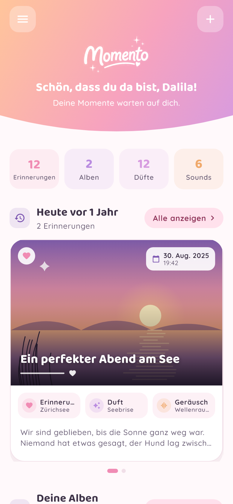
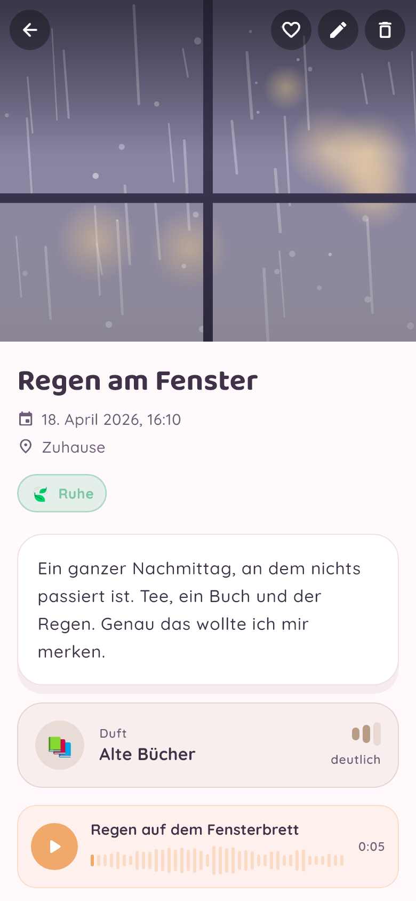
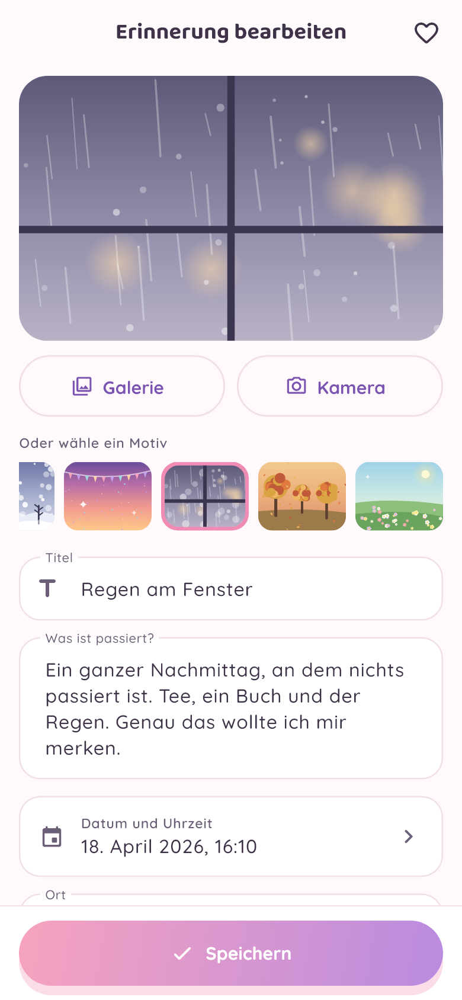
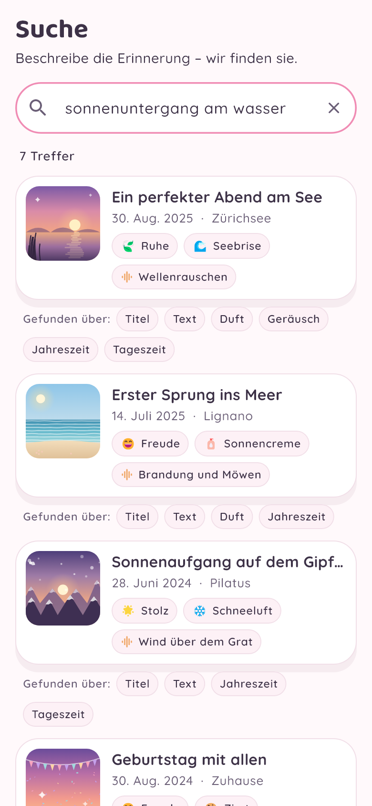
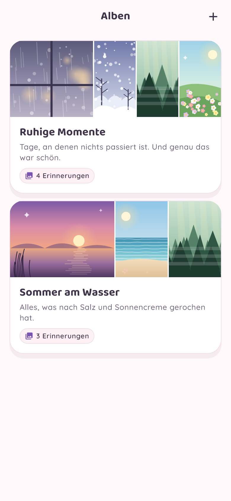
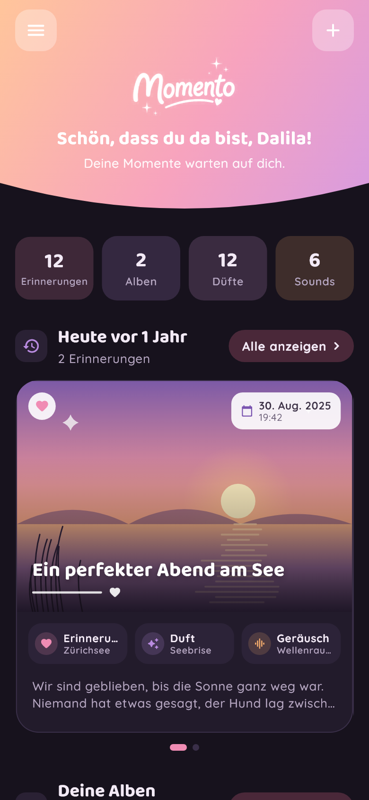
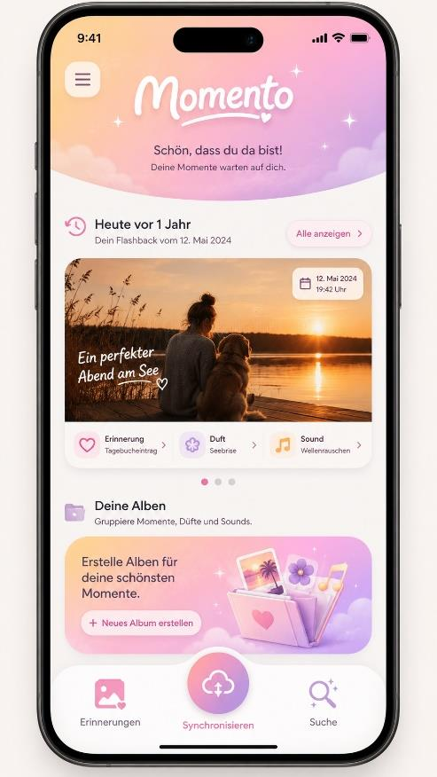

💜
Flashbacks
Was hast du an diesem Tag vor einem Jahr erlebt? Momento zeigt es dir von selbst, sobald du die App öffnest.
Momento hält nicht nur fest, wie ein Moment aussah – sondern auch, wonach er roch und wie er klang. Ein Bild, ein Ort, ein Duft, eine Tonaufnahme: So bleibt ein Augenblick wirklich.
Kostenlos · ohne Installation im Browser · als App für Android · keine Anmeldung im Netz nötig

Was Momento kann
Jede Erinnerung besteht aus mehr als einem Bild – und genau das macht sie später wieder lebendig.
Was hast du an diesem Tag vor einem Jahr erlebt? Momento zeigt es dir von selbst, sobald du die App öffnest.
Seebrise, Sonnencreme, Lagerfeuer, Grossmutters Wohnung: 16 Düfte zur Auswahl, mit Intensitätsregler – oder in eigenen Worten.
Nimm das Wellenrauschen wirklich auf. Die Aufnahme gehört zur Erinnerung und lässt sich jederzeit wieder abspielen.
Beschreibe die Erinnerung, statt sie zu benennen. «Abend am Wasser» findet den Seeabend – auch wenn dort nirgends «Wasser» steht.
Fasse zusammen, was zusammengehört: eine Reise, ein Sommer, ein Mensch. Mit Bildern, Düften und Geräuschen.
Alles wird auf deinem Gerät gespeichert. Kein Konto im Netz, kein Server, funktioniert auch im Flugmodus.
Ein Blick hinein
Hell und dunkel, auf Deutsch und Englisch. Seitlich wischen für mehr.





Loslegen
Im Browser läuft Momento sofort – auf dem iPhone, auf dem iPad, am Computer. Für Android gibt es zusätzlich eine richtige App.
Nichts installieren, nichts erlauben: Link öffnen und loslegen. Funktioniert auf jedem Gerät mit einem aktuellen Browser.
Momento im Browser öffnenDie vollständige Fassung: Kamera, Mikrofon und Speicher verhalten sich hier so, wie man es von einer App erwartet.
Die Geschichte
Im Rahmen der Berufsmaturität schrieben vier Schülerinnen einen Businessplan für ein erfundenes Unternehmen. Sie erfanden eine App, die Erinnerungen samt Düften und Geräuschen festhält, entwarfen das Logo, wählten die Farben, drehten ein Werbevideo und rechneten den Markt durch.
Nur die App selbst gab es nie. Genau die ist hier entstanden: Farben, Logo, Aufbau und Funktionen stammen eins zu eins aus diesem Businessplan.
An zwei Stellen weicht sie bewusst ab. Das im Konzept vorgesehene Ausweisfoto bei der Registrierung wurde gestrichen – für eine Erinnerungs-App gibt es keinen Grund, einen Ausweis zu verlangen. Und Düfte werden beschrieben statt gemessen, weil kein Smartphone einen Geruchssensor besitzt. Geräusche dagegen werden wirklich aufgenommen.
